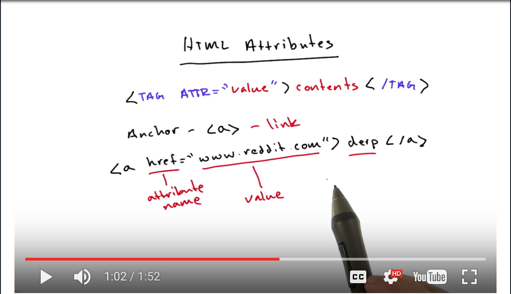
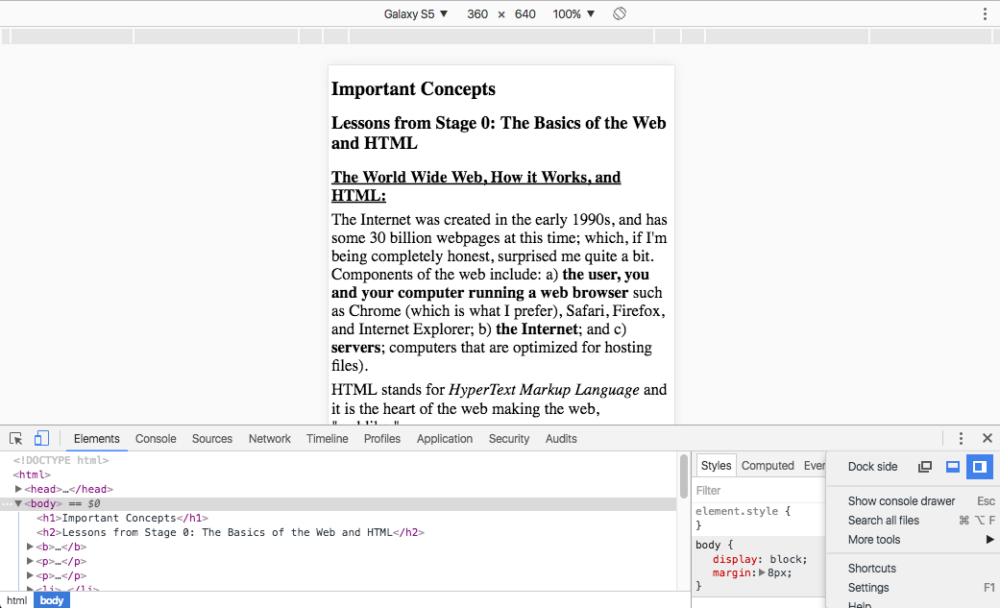
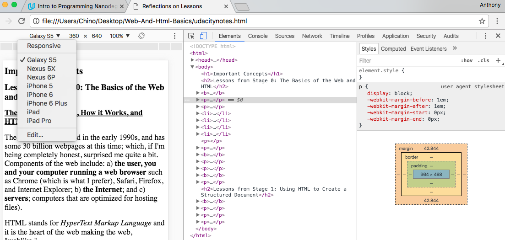
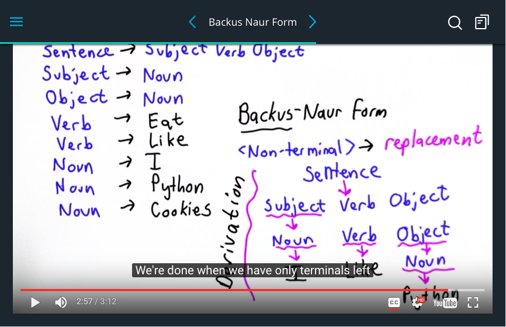
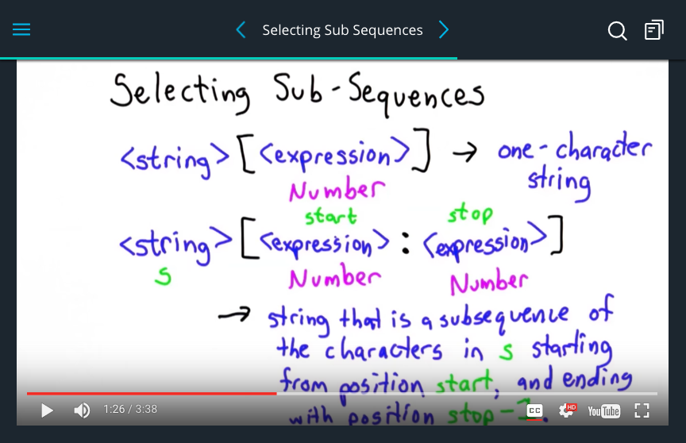

☰ menu


"Illuminate the night. Let your light shine bright"
About Me


Stage 0: The Basics of the Web and HTML
The World Wide Web, How it Works, and HTML
The Internet was created in the early 1990s, and has some 30 billion webpages at this time; which, if I'm being completely honest, surprised me quite a bit. Components of the web include: a) the user, you and your computer running a web browser such as Chrome (which is what I prefer), Safari, Firefox, and Internet Explorer; b) the Internet; and c) servers; computers that are optimized for hosting files).
HTML stands for HyperText Markup Language and it is the heart of the web making the web, "weblike."
Accordingly, HTML is made up of:
- text content, or what you see
- markup, or what it looks like
- linkes to other pages, or hyperlinks
- references to other documents, such as images, videos, etc.
To troubleshoot issues you may experience with your HTML code, check out this website to validate your HTML code.
Tags and Elements
Computers interpret language literally, so it makes sense that computer programming languages are designed to limit ambiguity. HTML documents are made up of HTML elements, and tags typically bookmark the content of an element with an opening and closing tag. These tags help computers interpret the HTML you've written with more specificity, giving your webpage more structure, and design. Tags can be used to bold, italicize, or underline words of text, for example. For an HTML Element Reference table in which HTML tags are ordered alphabetically, contain a description, and a note as to if that tag is supported by the current version of HTML, HTML 5, click here.
Additonally, some elements accept values called attributes in their opening tags that provide additional information to the browser, such as the anchor tag attribute that was drawn up by, and explained, by Scott. I found this example very teachable because this anchor tag creates the hyperlink, or link, demonstrating the power of the connectivity of the web with such a simple line of code:

Inline v. Block v. Container Elements
Inline elements are just text, which code displays in a line in your browser window. There can be several spaces between the text of code, called whitespace, but unless otherwise styled, the text will simply end in its current line, and go to the next, such as when the single line break tag, br, is used. Also, don't forget that images are inline elements. However, unlike inline elements, block elements actually form a box around the text to which heights, and widths can be applied. Examples of block elements include p and div tags.
It follows then, that container elements do nothing but contain stuff inside them. Container elements can be styled inline via the span tag, or block via the div tag, to which complex styling can be applied in CSS. The important thing to remember is to use span tag if you want to add style, inline, to your webpage without affecting the format of your webpage you've created using div tags.
Also, re: span and div tags specifically, other tags, such as p, h1, h2, b, u, etc., already have some styling attached to them, as to being the bare bones structures span and divs have to which you can map with styling of your choosing. If you want to further develop great html pages, it's really about divs and how you can layer boxes on top of each other, "like lego blocks"-Instructor Name
Stage 1: Using HTML to Create a Structured Document
Translating a Visual Design Into a Website
First, you must build a good conceptual understanding of how websites work. I really liked Jessica's analogy likening the building of a website to a house in that HTML files are the structure, i.e. where walls are placed, and which rooms are your kitchen, dining room, living room, bedroom, etc. CSS files then, are the styles of your house:
- What color is the carpeting in each room?
- What color are the walls?
- What kind of decorations on your wall?
- Is there space those decorations on the wall?
- What is the of your ceiling?
- Are there windows? If so, how many?
- Do all the rooms have windows?
And these questions could go on, and on. Just as there are thousands of questions and ways (answers) to style, and thus build, a house, a website can be built the same way, conceptually. Javascript files then are the interactive components of your house, like the garage door opener, dimmer faders on light switches, or the remote to your entertainment center, TV, or stereo system that can change some element of your house.
Developer Tools
Developer Tools is an incredible tool for designers that shows designers the structure of a webpage, as the browswer interprets it. To use Developer Tools for your webpage, simply open your file in Chrome, right click on your webpage, and select "Inspect" found at the bottom of the pop-up menu. Once developer tools opened, the dockside was displayed at the bottom of my window:

f
However, I'd suggest changing your view so that your dock is placed to the right. In the bottom-right corner in the above screenshot, you can see how to change the display location of your dock, resulting in:

Doing so made it easier for me to see my code in the browser (left side), while simultaneously viewing the elements tab, in which your coding tree is displayed (center), along with the styles column (right side).
Having the dock on the right also more readily allows you to inspect the margin, border, or padding surrounding elements. You can play around with these numbers in DevTools and immediately see the impact they make on your webpage. You can also add various styling components under element.syle {--insert styling--} to immediately see the impact of say, changing a font color or size, might have on your webpage without making changes to your existing code. But, if you like what changes you see, you can then incorporate that styling into your CSS file.
Lastly, while in Developer Tools, you can also select the type of media screen you'd like to test your code in, including Galaxy S5, Nexux 5X, Nexus 6P, iPhone 5, iPhone 6, iPhone 6 Plus, iPad, and the iPadPro (displayed in the drop down menu in the top-left corner in the above screenshot). Be sure to use this feature when you're designing your own sites, as all developers and designers are encouraged to test and debug their code on a variety of screen sizes!
Boxes Everywhere, Grids, and Rules
Almost everything on a webpage is built on a grid system using boxes in the shapes of either squares or rectangles, which is an important concept to understand as a Front-End Designer because the quicker you learn this, the easier your life will be. If you feel like you want to be able to control the layout of your webpage(s), think in boxes and ask: how can I put boxes within other boxes to control the layout I want? Because there are so many components to each box, it can often be hard to get the size of a box just right. But to help deal with sizing issues:
- Set sizes in terms of percentages rather than pixels.
- Set the box-sizing attribute to border-box for every element.
REMEMBER the rule "display: flex;" applied to the appropriate CSS will override default div behavior that automatically extends the width of divs to your entire webpage within a browser window.
Adding CSS Style and HTML Structure
DO NOT REPEAT yourself is one of the most important rules of computer programming. It is essential to avoid repetition in all areas of programming, but doing so is particularly helpful with CSS, or Cascading Style Sheets. Cascading really just means that the employment of the most specific rule that can be applied, will be applied: so ORDER MATTERS!
REMEMBER that cascading rules apply not only to the elements they directly match, but also to all of those elements' child elements. You can also think about CSS as a search and replace tool: you identify a class or a tag of the element you want to find (or match, in CSS terminology), and then what you want to do with it, or what property values to replace with different ones.
Element ID v. Element Class v. Element Alt
What's the purpose of an element id? An element's ID is used to uniquely identify SINGULAR elements in an html document, so that that element is the only one with that specific id, allowing you to directly target it with your styling.What's the purpose of an element class? An element's CLASS refers to a GROUP of elements that can be styled together, such as class="img-responsive" for images you have on your website that you want say, the same type of border around, for some reason, etc. Class names should not contain periods or any other punctuation marks.
When styling your classes or id's, be mindful of the units of measurement you, i.e. styling a container element to a certain width via the use of px versus the use of %. Setting px will permanently set the size of your container within the browser window, thus rendering it with design that is non-responsive, as it would be with a width set to 100%. Lastly, adding an alt to an element, to an image, for example, because it helps people with accesibility issues, say people who can't see well or if they are unable to view a computer, there are programs that read outloud, the text of a website.
Stage 2: Code Your Own Quiz
Intro to Serious Programming
A computer is a universal machine, which we can program to do essentially any computation. So, anything that we can imagine, anything that we can figure out how to write a program for, we can make the computer do. And what the program needs to be, is a very precise sequence of events. The computer, by itself, doesn't know how to do anything. It can execute a few simple instructions, but to make a program do something useful, we need to put those instructions together in a way that it does what we want, turning the computer into a machine, a server, a web browswer, etc. The power of a computer is that it can execute billions of instructions in one second. Our program gives us a way to tell the computer what steps to take. In this stage I will be learning about Python programming.
Python is called an interpreter, meaning it runs our programs, interprets them, executes the programs that we wrote in the Python language by running a program in a language in which the computer can understand directly
In the answer video for the What is a program? quiz, Dave said: "The programs you'll write in this class will be Python code. Those will be input to another program which is a Python interpreter that follows the instructions in your code and it does that by following the instruction in its code... and you'll be able to run all that using your web browser." Hidden in these two sentences are examples of 3 of the 5 ways you can think like a programmer:
- The line "...follows the instructions in your code..." references the procedural thinking required of programmers.
- The entire quote demonstrates a deep technological empathy (which you don't need to have at this point) for how computers and programs work.
- When Dave thinks of a Python program, a Python interpreter, and a web browser as different versions of the same thing (a computer program) he's showing abstract thinking.
Backus-Naur Form
The purpose of Backus-Naur form is to be able to precisely describe exactly the language in a way that's very simple and very concise. A derivation just means starting from some non-terminal, following the rules to derive a sequence of terminals, so that we're done when we only have terminals left, and we've derived a sentence with grammar, as illustrated below:

Note, however, that there are lots of other sentences we could have produced, starting from the same non-terminal, if we pick different rules to follow.
Running Code from the Command Line
Summary of commands you learned how to execute include:
- ls, which lists the contents of a directory,
- cd, which changes your working directory,
- pwd, which prints your working (current) directory,
- open / start, which opens a file (on Mac or Windows, respectively),
- touch, which creates a new file with a specified extension or file type,
- mkdir, which makes (creates) a new directory,
- rm, which permanently removes a file,
- rmdir, which permanently removes an empty directory,
- rm -r, which permanently removes a directory and its contents (without confirmation), and
- rm -ri, which permanently removes a directory and its contents (with confirmation)
To run Python code on your computer from the command line:
- Save your Python code with a .py extension. Note the location of this file on your computer.
- Open a shell window. Use the command line to navigate to the directory in which your Python file is saved.
- Run the Python file by typing python, followed by the full name of the Python file. For instance, to run a file named test.py that lives in your working directory, you would execute the command python test.py. (Note: For Windows users running Git Bash, you should instead execute the command winpty python test.py to run your Python file.)
- In the shell window, you’ll receive the output of your Python code. (Note: Remember that any changes made to your Python file — for example, those made through your text editor — need to be saved in order to be reflected when executing that Python file through the command line.)
Python Variables
In Python, we can use a variable to create a name and use that name to refer to a variable. The way to introduce a variable is to use an assignment statement. For an assignment statement: Name = Expression. The name on the left side refers to the value that the expression has. The name can be any sequence of letters and numbers, as well as underscores, as long as it starts with a letter or an underscore.
The important thing about variables in Pythin is that they can vary, that's why they're called variables. When we define the variable, we can change the value. And then when we use that name again, it refers to the new value. REMEMBER that a variable has to be introduced before it can be used, before it can be assigned the value which then replaces the name until the end terminal has been reached. Also, keep variables to all lower case letters, if possible. There isn't a rule against it in Python, but it is apprently a convention amongst developrs to keep variables lower-case.
Python Strings
In Python a string is just a sequence of characters surrounded by quotes. Strings can begin with either single, or double quotes, and the only requirement is that it must end with the same quotation as to which the string was begun. With the introduction of a plus sign (+) as an operator, say i.e. name = 'Anthony', then print 'Hello' + name, in which the plus means concatenation of the two strings. We cannot, however and numbers to strings. We can, however, multiply strings by numbers.
One of the things we can do wi th strings that we cannot do with numbers is extract sequences from the strings. REMEMBER that a string is a sequence of characters, and such strings can be indexed. Indexing strings start at 0, and move to 1, 2, 3, +...etc. A common IndexError includes string index out of range if your number in the bracket is beyond the number of sequence of characters within your string. However, by using negative numbers in my index, it will start counting from the back of the string; i.e, index negative 1 will go as the last chararacter in the string, index negative 2 will go as the second to last character in the string, etc., until your negative mumbers take you to the last, or 0 sequence, of the string.
Selecting Sub-Sequences From Strings
So far we've used indexing, where we have a string, then our left square bracket with some expression that produces one number, closed by our right square bracket which gives us a one-character string. The other thing we can do with square brackets is select a sub-sequence of the string. Instead of just having one expression here, there can be an expression that should evaluate to a number, followed by a colon, and then followed by another expression that should evaluate to a number before the right bracket is used. This will evaluate to a string that is a subsequence of the characters in the input string, with the first expression on the left of the colon having a value of a number equal to start and the second expression to the right of the colon having a value of a number equal through stop minus 1.
Finding Strings in Strings

This contruct allows us to select from any string a subsequence of continuous characters in that string.
Guides and Resources
CSS Selector Tricks: Selectors and Complete Selector Almanac.
Mozilla Developer Network: CSS reference, HTML element reference, and how to use HTML sections and outlines.
Lastly, because CSS rules differ sometimes between browsers, there are efforts to promote consistency in styles across browsers. One popular solution to this issue is using what is referred to as a CSS reset such as Normalize.css, a project by Nicholas Gallaher and Jonathan Neal, with their source code available on Github.
Indy Tech News
Tech Scene Grows, The Economist, December 13, 2016
Salesforce Expansion, The Indianapolis Business Journal, March 11, 2017